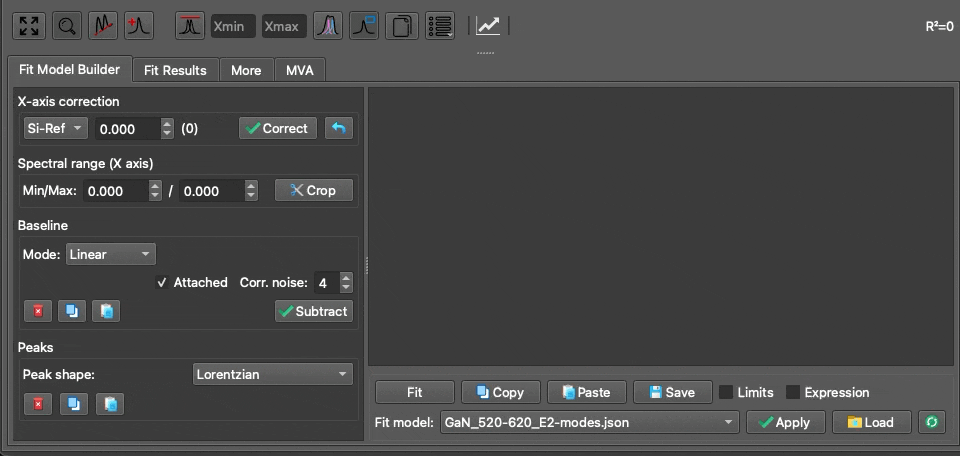
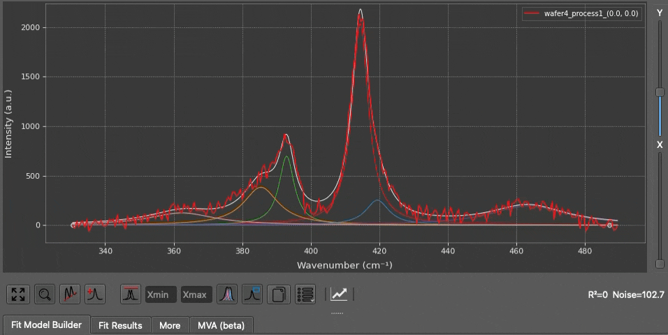
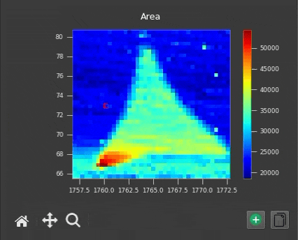
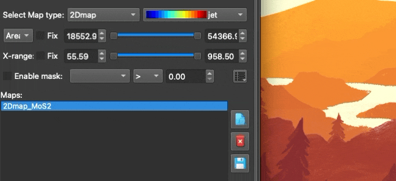

Shortcuts & Tips
Keyboard Shortcuts & Tips¶
1. Tooltips Everywhere¶
If you are ever unsure what a specific button or parameter does, simply hover your mouse cursor over the GUI element for a moment to reveal a descriptive tooltip.

2. Tips with SpectraViewer¶
In the SpectraViewer, you can interact with the spectra plot using your mouse:

- Use the shortcut key
Ctrl + R(orCmd + Ron macOS) to rescale the spectra plot to fit the visible data. -
You can also use the mouse wheel to adjust Y-axis zoom.
-
Adjust the vertical X and Y sliders on the right side of the plot to shift spectra along the X or Y axis for improved visual clarity.
- You can directly click and drag the center point or the width of any peak inside the
SpectraViewerto adjust its parameters dynamically. This is a much faster way to set up initial parameters for your fit. - Hover your mouse over a peak to display its parameters (position, width, amplitude).
-
Hover the mouse over a peak and right-click to remove it.
-
When defining a
baseline(LinearorPolynomial), once baseline anchor points are added, you can hover your mouse over an anchor point and right-click to remove it instantly.

- Regardless of the current global theme (dark or light), you can change the theme of the spectra plot in the
View Optionsmenu. Similarly, when you copy the figure to the clipboard, you can specify the theme (dark or light) for the copied figure. - You can show or deactivate best-fit curves or the legend box at any time by clicking the corresponding buttons in the
SpectraViewertoolbar. -
When the legend box is shown in the plot, double-click on any label to change its display name. Double-click on the color to change the color of the line.
-
Under every figure canvas, there is a Copy button. Simply click it to copy the plot as a PNG image. Hold
Ctrl(orCmdon macOS) and click the Copy button to copy the raw numerical dataset of the current plot directly to your system clipboard (instead of an image).
3. Tips with MapViewer¶
Extract Profile from 2D Map Plot: Whenever two distinct points are selected on the 2D map, the intensity profile between these two coordinates is automatically calculated and plotted directly on the heatmap:

The profile is displayed on the map when two points are selected, and it automatically disappears when more than two points are selected.

You can define a profile name in the
View Options menu, then click Extract to send it directly to the Graphs workspace for plotting.
Quick Re-fit (Warm Starting): If a fit does not converge perfectly, you can manually adjust the peak bounds and simply click the Fit button again. The engine will "warm-start" using the results of the previous optimization, making subsequent fits drastically faster.
Handling Complex Column Names: If you are using the Data Filter or Computed Columns features and your target column name contains spaces or special characters, you must enclose the column name in backticks (`) (e.g., `Laser Power` <= 5).
Spatial Profile Extraction: While inside the Maps workspace, if you select exactly two distinct spatial points on the MapViewer heatmap, SPECTROview will automatically extract and plot an interpolated intensity profile between those two coordinates.